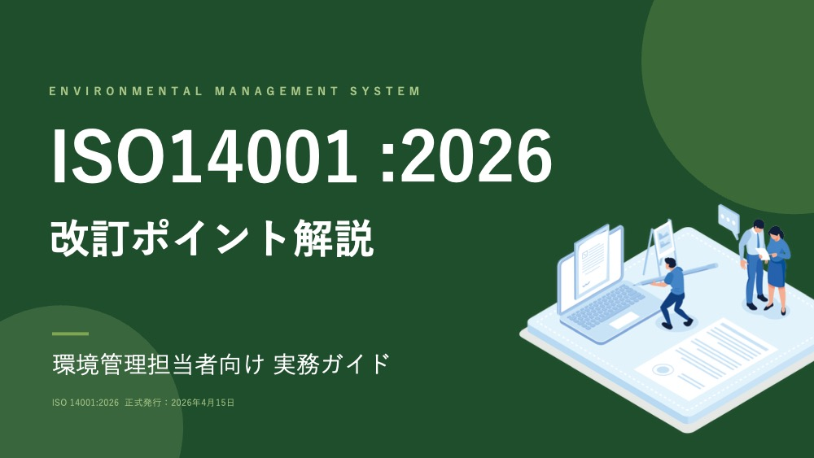

はじめに
市場においては、環境保全に対する社会の期待は高く、環境配慮型製品や環境に優しい取組みをしている企業に関心を多く持たれています。また、国連で採択された世界共通の未来への目標「SDG’s(持続可能な開発目標)」への取組みや組織の社会的責任(CSR)「社会貢献・経済的業績達成・環境保全の3つのバランス」を果たしているか注目されており、環境問題への取組みは社会的責任を果たすためには必要となっています。
SDG’sはご存知の方も多いと思いますが、この目標は全ての国々に対して豊かさを追求しながら地球を守ることを呼びかけていること、そして、貧困に終止符を打つため、経済成長を促し、教育、健康、社会的保護、雇用機会を含む幅広い社会的ニーズを充足しながら、気候変動と環境保護に取組む戦略も必要であることを示しています。環境マネジメントを実施する際にはこのSDG’sも取り入れる仕組み検討も必要な時代になってきています。
エイトスでは、提案活動を活性化させる方法や、従業員が自律的に動ける組織文化を作る支援をしています。無料でのご相談をしておりますので、是非一度ご連絡ください。
またサービス資料請求はこちらからお願いいたします。
さらに改善のDX化についてのノウハウや最新情報をメルマガで定期配信しているので、ぜひ下記URLからご登録お願い致します。https://mail.salesdiv.jp/bm/p/f/tf.php?id=eitoss0920&task=regist
マネジメントシステムとは
経営者が方針・目標を立て、それをどのようなやり方で達成するのか、誰がどのような役割分担で活動を行うのか、目標が達成できそうにない場合はどのようにして挽回するのか・・・・と言った経営目標を達成するための活動の仕組みやルールを指します。
マネジメントシステムには、
・品質マネジメントシステム (ISO 9001)
・環境マネジメントシステム (ISO 14001)
・情報セキュリティマネジメントシステム (ISO/IEC 27001)
・労働安全衛生マネジメントシステム (ISO 45001) 等があります。
「環境」とは？何をイメージするか？
環境と言われ、皆さんは何をイメージするでしょうか？
・大気、水、土、植物・・・
・公害 (有害物質の排出)
・地球温暖化 (CO2の排出)
・放射能汚染
・ゴミの発生
上記に挙げた項目は勿論正解ですが、これだけではありません。ISO14001の規格要求事項(環境マネジメントシステムを成すためのルールを規定した文書)では、
『大気、水、土地、天然資源、植物、動物、人及びそれらの相互関係を含む、組織の活動を取り巻くもの。ここでいう取り巻くものとは、組織内から地球環境のシステムにまで及ぶ』とされています。
つまり、「環境」とは、狭い範囲のマイナス要素を管理するだけにとどまらず、例えば、”クリーンな製品を作り、世界規模の環境改善に貢献する”という我々の本来業務そのものにも適用できるのです。
「環境マネジメントシステム」とは
上述した「環境」に関する取組みを「マネジメントシステム」に沿って活動・運用することを指します。この「マネジメントシステム」、つまり仕組みやルールは会社が独自に決めて実施するものなので、本来はどのような内容でも構いません。しかしISO 14001(国際規格)ではこの「マネジメントシステム」に対し、「このようなやり方をして下さい」と様々な規定があります。これを「規格要求事項」と言います。
「規格要求事項」では、「運用においてPDCAサイクルを回して継続的改善(スパイラルアップ)を図りなさい」とうたわれています。特にトップマネジメント(経営層)のリーダーシップ及びコミットメント(責任歩かんよ)が強く要求されています。このリーダーシップの指揮・支援により、組織は「環境マネジメントシステム(EMS)の意図した成果」を挙げるためにPDCAを回し、継続的改善に取組みます。
「PDCAサイクルを回す」とは
PDCAサイクルとは方針や計画(P＝Plan)を実施及び運用(D=Do)し、点検及び是正処置(C=Check)を行った後、経営層による見直し(A=Act)を指します。
図で示すと下のようになります。
図. PDCAサイクルの模式図
図. PDCAサイクルにISO14001規格要求事項を当てはめたもの
1.環境方針を立てる(P)
環境関連の法規制及び会社が同意したその他要求事項(環境保全協定や自主規制等)に順守する必要があります。そのための、環境方針を立て、継続的改善を行っていくことが重要です。
2.実行計画を立てる(P)
会社トップが約束した事項を達成するためには、「自分たちは何をしたら良いか」を考えて目標を立てます。そのためには、自分たちの作業・設備は何なのかを把握し、どんな環境影響があるのかを評価する必要があります。この行為を「環境影響調査」と言います。
次に、環境調査の結果、アウトプットが環境に大きな影響を及ぼすか、または、その可能性があるものを重大性が高いものとして抽出し、「著しい環境側面」（=重点課題）として特定します。
ここでの重大性とは、「有害なもの」、「法規制対象」、「社のトップが指定したもの」、「地球規模の環境改善に貢献できるもの」等をさします。この抽出された「著しい環境側面」（=重点課題）に対しては、目的を達成するための(管理)計画を立てます。
例えば、
・有害廃液を大量排出する設備
→漏洩等がないように管理しよう、排出量が少なくなるよう工夫しよう 等
・成果が地球規模のCO2排出量に貢献する設計
→目標とする性能が出るように工程を決めてやろう、強度問題を解決するため材料の見直しをしよう 等
・成果が省エネCO2排出量削減に貢献する業務
→業務フローの見直しによるムリ・ムラ・ムダの削減で業務の効率化を図ろう 等
3.立てた計画を実行する(P→D)
立てた計画は、やみくもに実施するわけにはいきません。計画(目標)を達成するためには、手順やルールを定めて行う必要があります。「実行」は、このルールに則って行います。定められた手順・ルールを逸脱することは御法度ですので要注意です。
なぜ手順やルールに則って実行するか聞かれる方もおられるかも知れません。著しい環境側面(重点課題)を達成するために実行計画は必要なものです。計画を達成するための手順・ルールを逸脱すれば重大な事故や成果の未達成を引き起こす可能性があり、また、もしそうなった場合、手順やルールが明確でなければ原因究明も困難になるので、手順やルールの逸脱は御法度なのです。
4.実行した計画を確認する(C)
最初に計画達成のために決めた手順・ルールを運用した結果、狙い通りの仕事の結果(成果)が出ているか確認します。Checkのいう確認とは、監視・測定・分析等を指します。例えば、目標が有害廃棄物の昨年度比10%低減だったとすると、測定として、有害廃棄物の今年度の発生量と昨年度の実績の比較というようなものがあたります。
手順やルール通りに行ったのに、成果が出ない場合や問題が発生した場合はどのようにすれば良いかというご質問をもらうことがあります。手順やルールが間違っていたり、よりよい方法が見つかることもあります。手順やルールの何が問題であったのか、なぜ問題が発生したのか、なぜ成果が出なかったのかを原因究明します。これもCheckの重要な項目です。
5.見直し改善(A)
Checkによって究明された問題の原因や手順・ルールの不備について、仕事のやり方を改善したり計画の内容を見直したりすることです。例えば、目標が「○○製品の製作所要日数10日短縮」出会ったとすると、測定が「各生産工程、資材手配の見直しで7日間短縮した」、究明が「□□加工が時間を要するため、ボトルネックとなっていた」、見直しとして、「□□加工の工程、やり方を見直そう」という具合に進めます。
この見直し結果がPlan(計画)に戻り、同じ手順を繰り返していくこととなります。これを「PDCAサイクルを回す」とスパイラルアップにより、継続的改善を繰り返していきます。
エイトスでは、提案活動を活性化させる方法や、従業員が自律的に動ける組織文化を作る支援をしています。無料でのご相談をしておりますので、是非一度ご連絡ください。
さらに改善のDX化についてのノウハウや最新情報をメルマガで定期配信しているので、ぜひ下記URLからご登録お願い致します。https://mail.salesdiv.jp/bm/p/f/tf.php?id=eitoss0920&task=regist
ISO14001の重要なポイント
前項までで大きな流れを紹介しましたが、実務を進めていく上での重要なポイントを紹介します。
① 環境影響調査(現状の問題点の認識)
問題の把握や課題の抽出を行う為には、現状を認識する必要があります。今ある設備・作業のインプットアウトプットを整理して評価することで自ずと問題点、手をかけないといけない点が浮き上がります。
「どんなことでも事前調査(現状把握)から」ということを思えておいて下さい。
② 著しい環境側面(=重要課題)の特定
環境影響調査から浮き上がってきた大きな問題点・課題については放置できませんので「著しい環境側面」(=重点課題)として特定し、PDCAサイクルに沿って、環境負荷低減、汚染予防、環境改善に努めなければ成りません。
著しい環境側面と特定されるのは大抵環境負荷の高いもの、有事の汚染の深刻なもの、成果が著しく環境に寄与するもの等になります。
今までの説明を纏めると以下のようになります。
ISO14001はなぜ必要か
ここで、事業と「環境」の関係を見ると、「企業」とは、営利団体であり、主目的である利益創出を追求すれば、支出低減の追求を極限まで行うことで、利益と無関係な項目を排除する行為を行うことになります。そうなると、例えば、汚水や、煤煙を処理せずにそのまま放出(地球環境無配慮)したり、騒音や振動の無対策(周辺環境無配慮)、使いたいものを使いたいだけ使う(資源・有害性無配慮)、重大課題の解決より事業優先(環境負荷の増大)等の「利益の為なら何をしても良い」という状態に陥ってしまいます。
これらの事象は極論ですが、企業は地域、社会、地球上で活動しており、これら周囲の環境と密接に関係しています。企業はこれらに配慮することが求められます。このように企業は社会に根材して活動を行っており、企業評価基準の多様化に体押して、持続的・永久的に発展していくためには、CSR(企業の社会責任)を果たして、社会や環境と調和・強調していくことが不可欠です。
また、①法対応などのリスクマネジメントの確立、②入札条件としての常識化、③経費削減、設備及び工法改善の為のツール、④方針、目的及び目標を明確にすることで経営の透明化と向上が図れる、⑤全員三亜の活動で、組織の環境意識の向上・醸成ができる、⑥問題点を自分で見つけ、継続的に改善していくことで、環境活動の継続的レベルアップが図れる などのメリットもあります。
万一、周辺地域の汚染を発生させたりした場合、信用の失墜から企業の存続の危機にも繋がります。逆に、環境性能の高い製品を世界に普及させれば世界中からの期待や世界環境の改善にも繋がります。こういったリスク・成果の為のツールにもなります。
ISO14001定着のために
定着のためには、環境管理を経営課題と位置づけ、環境影響の削減を常に経営の重点施策に取り上げることが必要です。また、ISOの基本である「継続的改善」をあらゆる業務に適用し、業務遂行の中心思想として位置づけることも重要です。
ISO14001取得と維持にかかる費用と審査時の必要物
今まで環境マネジメントシステム及びISO14001の必要性を述べてきました。それでは、そのISO14001の取得と維持にかかる費用はどの程度なのでしょうか。
ISO認証は、取得した翌年から2年間、2回の「維持審査」と1回の「更新審査」を受ける必要があり、それぞれ費用がかかります。また、確実に審査に通過してISO認証を維持・更新するために、コンサルにサポートを依頼する場合はコンサル料金が別途必要になります。平均的な価格を以下に示します。
文書審査料、ISO登録料、現地審査料などの基本費用が含まれたものですが、この金額は適用範囲や業種、規模、申請する審査機関により変わりますので、あくまで参考として見て戴ければと思います。
この審査の時にマネジメントマニュアルに載せている「記録」及び実際に使用している「記録」、業務手順書や環境方針、環境マネジメントマニュアルなどの文章類、また、マネジメントマニュアルに載せている「帳票」がチェックされる可能性があります。これらは審査直前に纏められるものではなく、日々きちんと作成し纏める必要があります。直前に不安になり、依頼したコンサルから指摘があり夜遅くまで必要物をそろえるということされた方もおられることでしょう。
記録や文書類、帳票は一元管理できるシステムなどがあると安心ですし、コンサルの費用を抑えることにも繋がりますので、管理手法などはご検討されると良いと思います。
今回は環境マネジメントシステム及びISO14001についてお話をしてきました。持続可能な地球を守り、企業の社会的責任を果たし、環境意識の向上・醸成を図っていきましょう。
エイトスでは、提案活動を活性化させる方法や、従業員が自律的に動ける組織文化を作る支援をしています。無料でのご相談をしておりますので、是非一度ご連絡ください。
現場の業務改善を網羅的に確認する「改善チェックポイント100」を上記画像よりダウンロードが可能となっております。
さらに改善のDX化についてのノウハウや最新情報をメルマガで定期配信しているので、ぜひ下記URLからご登録お願い致します。https://mail.salesdiv.jp/bm/p/f/tf.php?id=eitoss0920&task=regist

どう変わる？ ISO14001 の改訂を現場レベルで確認するポイント 詳しくはこちら → ← コラム一覧へ戻る